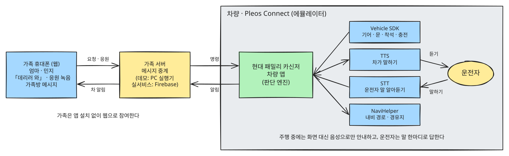
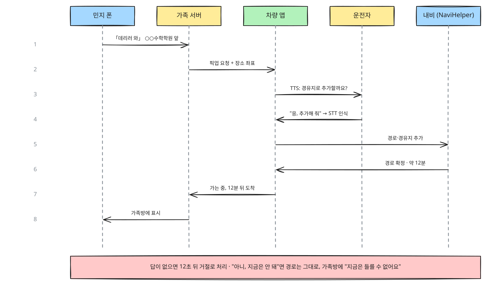
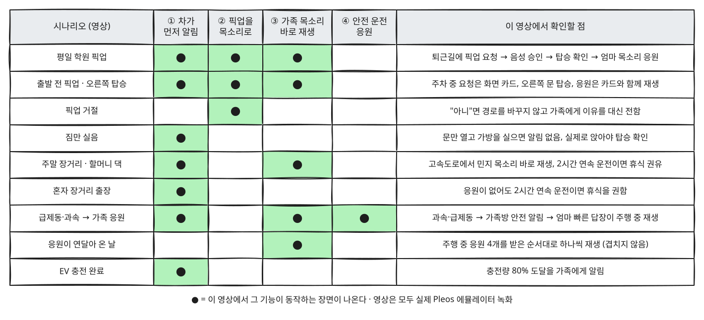

현대 패밀리 카신저
팀 nemo · 현대자동차그룹 차량용 앱 개발 공모전 출품작 · 소스 코드와 APK
차가 가족 대화방의 한 구성원이 되어 출발·도착·뒷좌석 탑승을 운전자 대신 가족에게 알리고, 가족의 픽업 요청과 응원 목소리를 운전자가 화면을 만지지 않고 받게 하는 Pleos Connect 앱입니다.
1. 한눈에 보는 구조
가족은 휴대폰 웹으로, 운전자는 목소리로만 참여합니다. 차량 앱이 Pleos SDK로 차의 상태(기어·문·좌석·충전)를 읽고, 말하고(TTS), 듣고(STT), 내비에 경유지를 넣습니다(NaviHelper).

2. 핵심 흐름: 픽업 요청을 목소리로 승인
운전 중인 부모가 폰을 보지 않고 "응" 한마디로 아이의 픽업 요청을 받아들이는 순서입니다. 아래 「평일 학원 픽업」 영상의 2~4단계가 이 그림입니다.

3. 어떤 영상이 무엇을 보여 주나

- 평일 학원 픽업
- 출발 전 픽업 요청 · 오른쪽 탑승
- 픽업 거절 (지금은 못 들름)
- 짐만 실음 (오탐 방지)
- 주말 장거리 · 휴게소 응원
- 혼자 장거리 (휴식 권유)
- 신호 대기 (재생 안 함 확인)
- 응원이 많은 날 (정차 1회당 3개)
- EV 충전 완료 알림
4. 시나리오별 영상 (소리 포함)
화면 왼쪽은 시나리오 실행기, 가운데는 Pleos 에뮬레이터의 차량 화면, 오른쪽은 가족 휴대폰 웹입니다. 화면 아래 자막이 지금 단계와 「확인할 것」을 알려 줍니다. 소리는 차의 음성 안내와 응원 재생입니다.
1. 평일 학원 픽업 57초
출발 → 민지의 픽업 요청 → 음성 승인 → 학원 도착 → 뒷좌석 탑승 확인 → 집 도착·응원 재생 (기능 ①②③)
단계별로 확인할 것 (8단계)
- 준비: 주차 상태로 초기화
상황: 기어 P, 문 닫힘, 뒷좌석 비움, 오늘 목적지: 집
확인할 것: 가족방이 비워짐 - 18:00 아빠 출발
상황: 기어 D, 시속 50km까지 가속
확인할 것: 엄마·민지 폰: "아빠 출발, 40분 뒤 집 도착 예정" - 18:15 민지가 「데리러 와」
상황: 민지가 가족 웹에서 픽업 요청 (주행 유지)
확인할 것: 차 화면에 픽업 승인 카드 + 음성 질문 "경유지로 추가할까요?" - 아빠가 "응"
상황: 운전자가 "응, 추가해 줘"라고 답함 → 음성 인식(STT)으로 승인 (목소리는 공개 TTS 녹음을 마이크 대신 넣음)
확인할 것: 경유지 추가 · 가족방: "아빠가 가는 중, 12분 뒤 도착" - 18:27 학원 앞 도착
상황: 감속해 정차, 기어 P
확인할 것: 가족방: "○○수학학원 앞에 도착했어요" - 18:28 민지 탑승
상황: 왼쪽 뒷문 열림 → 왼쪽 뒷좌석 착석 → 문 닫힘
확인할 것: 엄마 폰: "뒷좌석 탑승 확인 (민지)" - 집으로 출발 · 엄마가 응원 음성
상황: 기어 D, 시속 40km. 주행 중 엄마가 응원 음성을 보냄
확인할 것: 가족방: "민지와 함께 집으로 출발" · 응원은 주행 중이라 보관만 함 - 18:55 집 도착
상황: 정차 후 기어 P
확인할 것: 가족방: "집에 도착해서 주차했어요" + 엄마의 응원 음성 재생
2. 출발 전 픽업 요청 · 오른쪽 탑승 56초
주차 중에 온 픽업 요청은 화면 카드로 보이고, 오른쪽 뒷문 탑승도 확인하며, 주차 중 응원은 보관 없이 바로 재생하는지 확인
단계별로 확인할 것 (8단계)
- 준비: 주차 상태로 초기화
상황: 기어 P, 문 닫힘, 뒷좌석 비움, 오늘 목적지: 집
확인할 것: 가족방이 비워짐 - 주차 중 민지의 「데리러 와」
상황: 아빠는 아직 주차 중(P)
확인할 것: 차 화면에 픽업 카드가 그대로 보임 + 음성 질문 - 아빠가 "응"
상황: 주차 중 승인
확인할 것: 가족방: "아빠가 가는 중, 10분 뒤 ○○도서관 앞 도착" - 도서관으로 출발
상황: 기어 D, 시속 50km
확인할 것: 가족방: "아빠 출발, 30분 뒤 집 도착 예정" · 경유지 배너 - 도서관 앞 도착
상황: 정차 후 기어 P
확인할 것: 가족방: "○○도서관 앞에 도착했어요" - 민지가 오른쪽으로 탑승
상황: 오른쪽 뒷문 열림 → 오른쪽 뒷좌석 착석 → 닫힘
확인할 것: 가족방: "뒷좌석 탑승 확인 (민지)" - 주차 중 엄마의 응원
상황: 아직 주차(P) 중에 엄마가 응원을 보냄
확인할 것: 보관하지 않고 바로 재생 - 집으로 출발 후 도착
상황: 기어 D로 주행 후 정차·P
확인할 것: 가족방: "민지와 함께 집으로 출발" → "집에 도착해서 주차했어요"
3. 픽업 거절 (지금은 못 들름) 34초
주행 중 민지의 픽업 요청에 아빠가 "아니"라고 하면, 차는 경로를 바꾸지 않고 가족에게 거절 이유를 대신 전하는지 확인
단계별로 확인할 것 (5단계)
- 준비: 주차 상태로 초기화
상황: 기어 P, 문 닫힘, 뒷좌석 비움, 오늘 목적지: 집
확인할 것: 가족방이 비워짐 - 퇴근길 출발
상황: 기어 D, 시속 60km
확인할 것: 가족방: "아빠 출발, 25분 뒤 집 도착 예정" - 민지가 「데리러 와」
상황: 주행 중 픽업 요청
확인할 것: 차 음성 질문 "경유지로 추가할까요?" - 아빠가 "아니"
상황: 운전자가 "아니, 지금은 안 돼"라고 답함 → 음성 인식(STT)으로 거절 (목소리는 공개 TTS 녹음을 마이크 대신 넣음)
확인할 것: 차 음성 "알겠어요. 가족에게 전할게요." · 가족방: "지금은 들를 수 없어요. 조금만 기다려 줘" - 집 도착
상황: 정차 후 기어 P
확인할 것: 가족방: "집에 도착해서 주차했어요" · 경유지 없음
4. 짐만 실음 (오탐 방지) 37초
학원 앞에서 뒷문으로 가방만 실으면 알림이 가지 않고, 실제로 앉았을 때만 탑승 확인이 가는지 확인
단계별로 확인할 것 (5단계)
- 준비: 주차 상태로 초기화
상황: 기어 P, 문 닫힘, 뒷좌석 비움, 오늘 목적지: 집
확인할 것: 가족방이 비워짐 - 학원으로 가는 중 픽업 요청
상황: 주행 중 민지의 요청 → 아빠 "응"
확인할 것: 경유지 추가 - 학원 앞 정차
상황: 기어 P
확인할 것: 가족방: "○○수학학원 앞에 도착했어요" - 오른쪽 뒷문으로 가방만 실음
상황: 오른쪽 뒷문 열림 → 닫힘, 좌석은 비어 있음
확인할 것: 탑승 알림 보내지 않음 · 차 화면: "착석 신호 없음" - 민지가 왼쪽으로 실제 탑승
상황: 왼쪽 뒷문 열림 → 착석 → 닫힘
확인할 것: 이때만 "뒷좌석 탑승 확인 (민지)"
5. 주말 장거리 · 휴게소 응원 62초
고속도로 주행 → 2시간 연속 운전(시연용 20초) → 휴게소 정차 시 민지의 응원 재생 (기능 ③)
단계별로 확인할 것 (6단계)
- 준비: 주차 상태로 초기화
상황: 기어 P, 문 닫힘, 뒷좌석 비움, 오늘 목적지: 할머니 댁
확인할 것: 가족방이 비워짐 - 출발
상황: 기어 D, 시속 100km까지 가속
확인할 것: 가족방: "아빠 출발, 180분 뒤 할머니 댁 도착 예정" - 민지가 응원 음성을 남김
상황: 고속도로 주행 중 (2시간을 20초로 압축)
확인할 것: 주행 중이라 재생하지 않고 보관 - 연속 운전 2시간 도달
상황: 계속 주행
확인할 것: 차 음성 한 문장: "가족이 보낸 응원 메시지가 있어요. 쉬는 곳에 멈추면 들려 드릴게요." - 휴게소 정차
상황: 감속해 정차, 기어 P
확인할 것: 가족방: "휴게소에서 쉬는 중이에요" + 민지의 응원 재생 - 다시 출발 후 도착
상황: 기어 D로 주행 후 정차·P
확인할 것: 가족방: "할머니 댁에 도착해서 주차했어요"
6. 혼자 장거리 (휴식 권유) 46초
응원이 하나도 없어도 2시간 연속 운전(시연용 20초)이면 휴식을 권하고, 휴게소 정차를 가족에게 알리는지 확인
단계별로 확인할 것 (5단계)
- 준비: 주차 상태로 초기화
상황: 기어 P, 문 닫힘, 뒷좌석 비움, 오늘 목적지: 부산
확인할 것: 가족방이 비워짐 - 출발
상황: 기어 D, 시속 100km
확인할 것: 가족방: "아빠 출발, 240분 뒤 부산 도착 예정" - 응원 없이 계속 주행
상황: 고속도로 주행 (2시간을 20초로 압축)
확인할 것: 변화 없음 - 연속 운전 2시간 도달
상황: 계속 주행
확인할 것: 차 음성 "오래 운전하셨어요. 잠시 쉬어 가세요." (보관된 응원이 없을 때의 문장) - 휴게소 정차
상황: 감속해 정차, 기어 P
확인할 것: 가족방: "휴게소에서 쉬는 중이에요" · 재생할 응원 없음
7. 신호 대기 (재생 안 함 확인) 41초
속도가 0이어도 기어가 D면 응원 음성을 재생하지 않고, 주차(P)했을 때 재생하는지 확인
단계별로 확인할 것 (5단계)
- 준비: 주차 상태로 초기화
상황: 기어 P, 문 닫힘, 뒷좌석 비움, 오늘 목적지: 집
확인할 것: 가족방이 비워짐 - 시내 주행 · 엄마 응원 도착
상황: 기어 D, 시속 40km. 엄마가 응원 음성을 보냄
확인할 것: 주행 중이라 보관 - 빨간불 정지 (기어 D 유지)
상황: 속도 0, 기어는 D
확인할 것: 응원 재생 안 함 · 화면도 주행 모드 유지 - 초록불 출발
상황: 다시 시속 40km
확인할 것: 변화 없음 - 집 주차
상황: 정차 후 기어 P
확인할 것: 가족방: "집에 도착해서 주차했어요" + 엄마의 응원 재생
8. 응원이 많은 날 (정차 1회당 3개) 55초
주행 중 응원이 4개 쌓이면 첫 정차에서 3개만 재생하고, 남은 1개는 다음 정차에서 재생하는지 확인
단계별로 확인할 것 (5단계)
- 준비: 주차 상태로 초기화
상황: 기어 P, 문 닫힘, 뒷좌석 비움, 오늘 목적지: 마트
확인할 것: 가족방이 비워짐 - 마트로 출발
상황: 기어 D, 시속 40km
확인할 것: 가족방: "아빠 출발, 10분 뒤 마트 도착 예정" - 응원 4개가 연달아 도착
상황: 주행 중 엄마·민지가 번갈아 응원
확인할 것: 모두 보관 · 홈 화면 "도착하면 들을 응원 4개" - 마트 주차
상황: 정차 후 기어 P
확인할 것: 가족방: "마트에 도착해서 주차했어요" + 응원 3개만 차례로 재생, 1개는 다음 정차로 - 집으로 출발 후 주차
상황: 기어 D로 주행 후 정차·P
확인할 것: 남은 응원 1개(민지 "아빠 최고") 재생
9. EV 충전 완료 알림 22초
주차 중 충전량이 목표(80%)에 도달하면 가족에게 알림 (기능 ①)
단계별로 확인할 것 (4단계)
- 준비: 주차 상태로 초기화
상황: 기어 P, 문 닫힘, 뒷좌석 비움, 오늘 목적지: 집
확인할 것: 가족방이 비워짐 - 충전 시작
상황: 충전량 60%
확인할 것: 변화 없음 - 충전 진행
상황: 70% → 75%
확인할 것: 변화 없음 - 목표 도달
상황: 80%
확인할 것: 가족방: "충전 80% 완료, 출발 가능"
5. 직접 조작 시연
시나리오 버튼 대신 가족 웹을 사람이 직접 누른 녹화입니다. 민지의 「데리러 와」 → 운전자 "응, 추가해 줘" → 학원 도착·탑승 → 엄마의 응원 녹음 → 집 도착 후 재생.
녹화 조건
- 모든 영상은 실제 Pleos Connect 에뮬레이터 v2.1.0에서 녹화했습니다. 차량 신호(기어·문·착석·충전)는 Virtual Console을 자동으로 조작해 바꿨습니다.
- 운전자 목소리("응, 추가해 줘" / "아니, 지금은 안 돼")와 엄마의 녹음은 공개 TTS로 만든 음성을 마이크 대신 넣었습니다. 인식은 Pleos 음성 인식(STT)이 실제로 합니다.
- 가족 서버는 실서비스의 Firebase 대신 PC의 실행기가 맡았습니다. 장거리 시나리오는 2시간 연속 운전을 20초로 줄여 시연합니다.